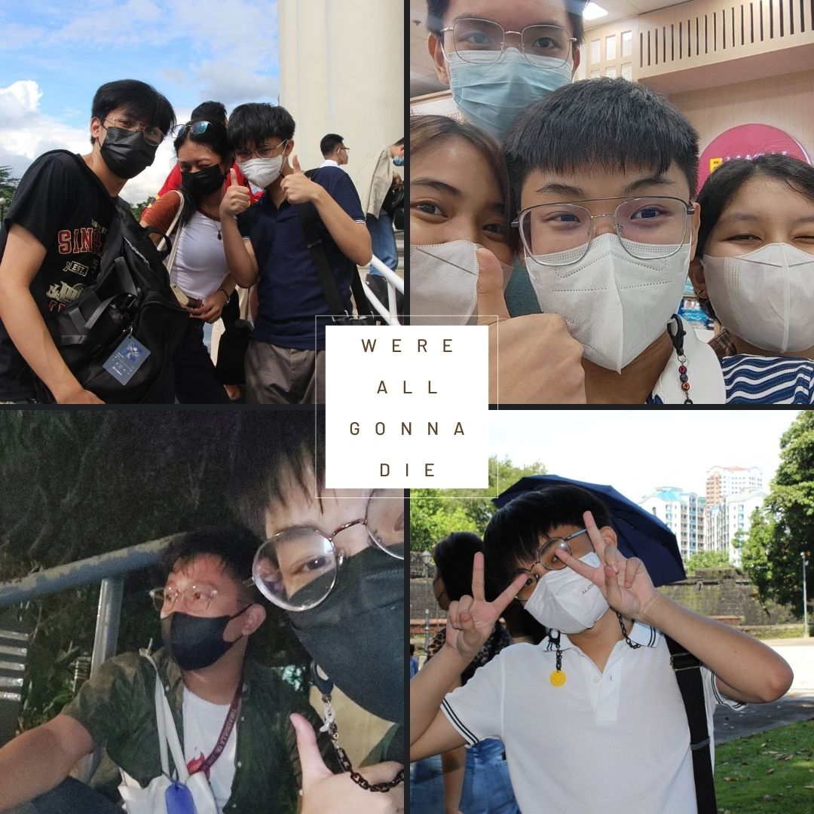
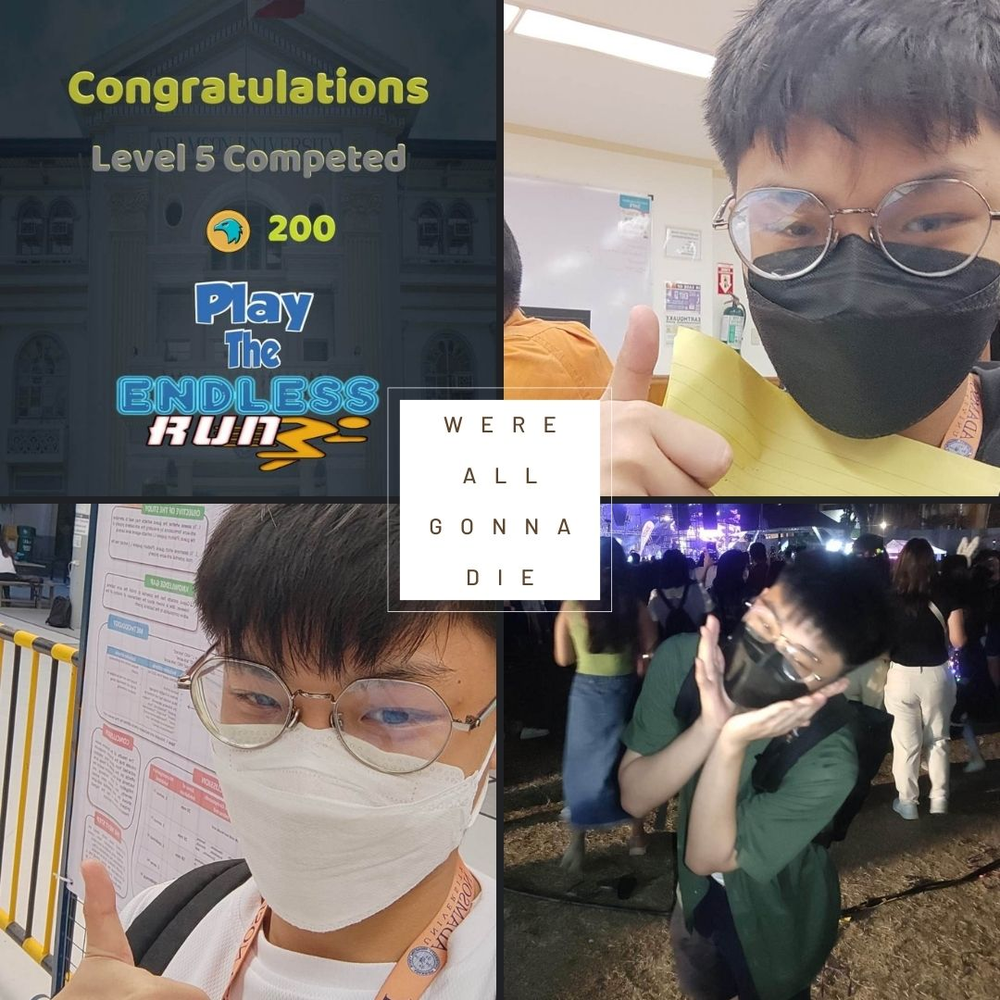
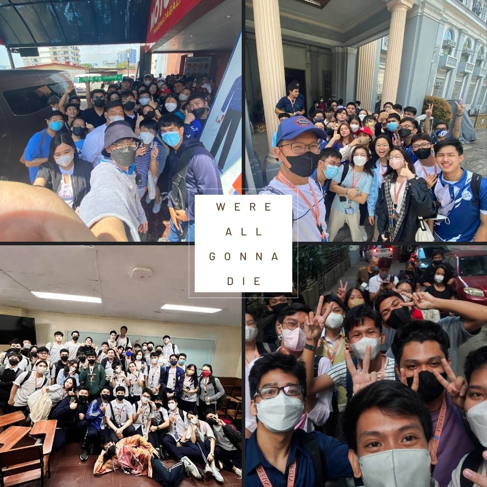

As I write this, I always keep in mind that we only have one opportunity to live, or "YOLO," as they say. I stepped outside of my comfort zone and did things that made me happy, such as visiting musical festivals, buying stuff I don't need and don't regret after, and going out much often with my friends, loved ones and draining my social battery with them more on these hanging out with them (as an introvert) and finishes the night with an exhausted but delighted me. . These are just a few examples, but I'm glad I stepped outside of my comfort zone. We were all going to die anyhow, so why not enjoy my life as a teenager? Everything will pass, but the memories I made on my journey will last forever.

One of the most essential lessons I've learnt this semester is that it's better to take risks than miss up an opportunity. I had to learn the hard way. That made me wonder if I truly deserved what I had now, and if I am not doing enough, I am unlikely to achieve the fulfillment I want, such as good grades and an excellent community. Now, I've taken a risk by devoting more time and effort to my studies in order to achieve good marks and express my extrovert personality, and if I hadn't taken the risk of stepping outside of my comfort zone, I wouldn't have the friends I have now and the grades I wanted to see and maybe helped me for a scholarship in the future. Risking is terrifying, but loosing out on an opportunity and doing nothing is more more difficult to digest; at least you tried.

I would like to thank everyone who helped me again. They made my life memorable and my freshman year simple and comfortable, despite the fact that it was difficult. My first and second semester blockmates both stood out to me. Throughout the semester, we had a lot of fun, joy, and laughter. I also had an outstanding time in terms of academics; we learnt, did exercises, tested codes, and will hopefully end this semester together. I know it's difficult to go through a semester, especially with the adjustment, knowledge, and effort required from senior high school, but I simply hope we finish it successfully and move on to the next chapter of our lives.